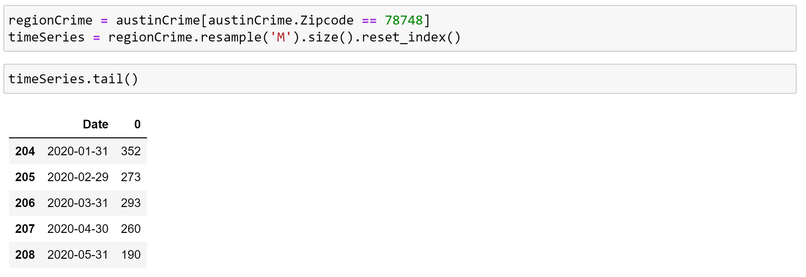

Predicting Crime Rates in Austin
Published: 06/14/2020
Introduction
Imagine planning to visit a city for a music festival or a work conference. While you are there you also plan to explore the city where it is occurring. You want to visit the top places to eat or other attractions while you are there but want to minimize the chances of getting robbed or stepping into a high crime area while you are there. So, for my capstone project I want to show with FourSquare location data being backed up by open crime data, there is a way to predict the likelihood of crime around the area a traveler plans to visit. Then use that result to show where they have the lowest possible chance of being a victim of crime. This will mainly be targeted at frequent travelers that don’t have time to do extensive research on where they are going and need a quick collection of information to help plan their trip. For the context of this post I will be performing this task to give information to a hypothetical travler to Austin, TX for SXSW in March of 2021.
Data Description
There are 3 datasets being collected to start this project:
Open Crime Data around the Austin, TX area. This data was obtained from https://data.austintexas.gov/ This data ranges all the way from 2003 to 2019.
Next will be all of the zip codes in the Austin,TX area. This data was obtained from https://public.opendatasoft.com/.
Last will be data from foursquare containing all the venues around the Austin,TX area. This data will be obtained using all of the zip codes from the the zip code data set, it will return with all of the names of the venues their latitudes, longitudes, and the venue's rating.
Methodology
The first step is to clean up and convert the crime data into a time series for analysis. This was done by first dropping any unhelpful entries. Entries were only removed if they were missing the date of occurrence or had no zip code. Since the crime data will be broken up by zip code to make predictions, if there is no zip code it cannot be categorized. The same is true for no date of occurrence. Next the zip codes were imported as float numbers, so they were transformed into integers for clear reading and to play nice with the zip code data set. Last the time of occurrence was converted into a new timestamp format of: YYYY-MM-DD HH:MM:SS. Lastly all of the columns that were unnecessary were dropped from the data frame, leaving only the Date, Highest Offense Description, and ZipCode columns.
Resulting in the this data frame:
Next is to divide this to create a time series for this for one zip code. I will for demonstration be using the zip code 78741. So first will make a data frame containg all of the crimes commited with zip code 78741. Then to make the time series I will use a method in pandas called resample in order to convert the data frame into a time series where it's entries are indexed by month.
With this time series now it is time to divide the series into a test and train data set. The training data will consist of all entries before 2019 and the test will be all entries after and including 2019. To make the predictions work better with Prophet it is recommended to log transform the data values which is the Crime count in this case. After giving the data to Prophet it will run its calculations and return a data frame containing the predicted crime count in log transformation. Finally prophey needs the data column to be renamed ds and the 0 column(The crime count) to be renamed y.
Training Data:
Running Facebook Prophet:

Results
The results from running Prophet is a large data frame that has entires for every month up to the end of 2021. Every entry has a predicted crime count (yhat) and an upper and lower bound(upper-yhat and lower-yhat respectively). These bounds and values can be displayed against the actual data points like this.
This model can be scored using mean square error with the test data and for this model it scores a 0.023. This score indicates a well fitting model for the data that is being fitted to it. Since we are intrested in the data for march 2021 the yhat value(crime count) from the forecast will stored in a data frame after being transformed out of its log trasnforamtion form. Next is to repeat this process for all other zip codes. This will result in a data frame that contains the crime counts for every zip code. This data is then transformed into it's crime rate by calculating the total number of crimes commited, and dividing each value in the data frame by the total number of crimes commited.
Head of the resulting data frame:
Using this data we can now classify the venues in Austin during March of 2021 based on if they have a high, moderate or low crime rate. They will be classified as:
High(red)- Having a crime rate in the 90th percentile
Moderate(yellow)- Having a crime rate below the 90th percentile but above the 40th
Low(green)- Having a crime rate in the 40th percentile
Top Venues in Austin:
Resulting Map of Classification:
Conclusion
Facebook Prophet is a great tool for forecasting time series data with great results. The model was built for every area that needed to be checked within the list of highest rated venues in the city. Now this model can be implemented into a tool to give travelers a quick and easy to digest amount of information that would normally take away from other preparations that need to be made for travel. This project was mainly focused on a broad look at how many crimes are being committed during any given month. The next step would be to get more specific with the window and build a new model in the pursuit of achieving as precise of a result as possible, in order to give a traveler the best information to make decisions for their trip.
Links:
Read the full report View the Jupyter NotebookGitHub: GitHub